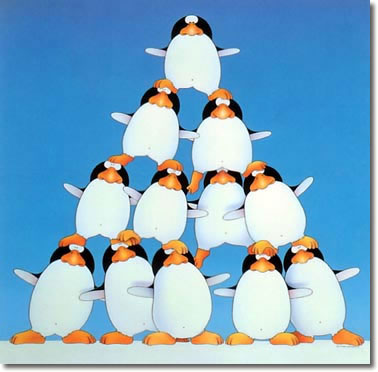

The Society for Practical Utopians
Working together to shape a brighter future for humanity
Talking Openly about Hierarchy
By Herb Bowie
2018 Apr 13
tags: cultural evolution, governance

I sometimes think that at least half of the confusion we currently experience in our civil discourse stems from our inability to speak openly and honestly about the nature of hierarchy.
Natural Hierarchies
We can all see the truth in the expression, “The whole is greater than the sum of its parts.” A word is more than just a bunch of letters, and a sentence is more than merely a string of words. A molecule is more than a suitcase full of atoms, and a suitcase is something greater than a whole heap of molecules. Molecules make up cells, and cells make up organs, organs work together to become functioning organisms, and organisms become parts of entire ecosystems. We see these sorts of interlocking holistic relationships everywhere we look, both in the natural world and in our manufactured environments.
If we look at the relationship between atoms, molecules, cells, organs and organisms, we can readily see that they form a particular hierarchy. At each level of the hierarchy something new emerges, something that both includes the units present at the lower level, but also transcends them, in the sense of providing some new capability or function or attribute.
We’re all comfortable and grateful for this sort of hierarchy when we’re talking about living organisms or useful gadgets: we would be sad if our iPhone suddenly lost its hierarchy and returned to its natural state of a pile of disassociated atoms, and infinitely sadder if our pet dog was suddenly turned into a pile of dust. So hierarchy is a good thing, right?
Human Hierarchies
A good thing, that is, until we turn our attention to human hierarchies. When we start to look at hierarchies in which human beings are not the end result, but merely the constituent parts, then our feelings begin to diverge.
In particular, I think, liberals and conservatives tend to view human hierarchies in very different ways. And I am reminded here of John Stuart Mill’s sentiment:
In all intellectual debates, both sides tend to be correct in what they affirm, and wrong in what they deny.
In this case, I believe that liberals often affirm – and conservatives deny – that hierarchies are used as instruments of oppression. On the other hand, conservatives tend to affirm – while liberals deny – that hierarchies are useful and necessary mechanisms for organizing human activity.
Armed with this perspective, for example, it becomes easier to see why Americans’ opinions diverge so strongly about NFL players who kneel during our national anthem in America. The more conservative members of American society seem to feel that the players should get back in line and do what they’re paid to do – should focus on fulfilling their roles in their chosen hierarchy; liberals, on the other hand, tend to see kneeling as a legitimate form of protest against the oppression found in many of the hierarchies in our society.
The Value of Human Hierarchies
Hierarchies are darned useful things. In fact, they’re pretty much essential to the functioning of our modern society.
If you doubt this, just think for a minute about the products and services you use on a regular basis, and then consider how many companies and governments are involved in the supply chains that bring these to your door, and then stop to realize that none of these organizations could function for a day without a hierarchy that allows people closer to the top to provide some kind of direction that will be followed by those below them.
Historically, hierarchy is the form of social structure that allowed us humans to advance from families to clans to tribes and beyond. Without social hierarchies, we would all still be hunter-gatherers.
When you think about it, a hierarchy is a pretty ingenious structure. Based on multiple studies, Dunbar’s number limits the group size a single human can directly interact with on a regular basis to somewhere between 100 and 250 individuals.
But what if you want to do something that will require the organization and interaction of many more than this number – something like sending a man to the moon, or building an automobile?
Well, suppose you create a social organization made up of multiple interlocking groups, in which each person interacts directly with peers, subordinates and the group’s leader? This wouldn’t violate Dunbar’s limitation, but would allow you to build much larger organizations capable of addressing more sizable and more complex tasks.
And that’s exactly what hierarchies accomplish for us humans. In fact, we could barely call ourselves human without them.
Improving on Hierarchies
For many years after humans first invented hierarchies, we lived in mono-hierarchical societies. That is, each human considered his or her self to belong to one and only one hierarchy. As tribes evolved into clans, and clans into states, these were naturally formed along geographic lines – and for good reason. These early hierarchies were designed to fulfill two important functions: organize human labor to optimize the production of goods and services within the group’s territory, and to defend that territory from outsiders.
And hierarchies have been largely successful in achieving these goals – which explains why, in a country like the US, we’ve been able to grow our human population so dramatically over the last several hundred years. Without the efficiencies developed by large hierarchies, it would be impossible for us to adequately feed and house and clothe such large numbers of people.
In a mono-hierarchical society, it is only natural that each member pledge his or her unwavering allegiance to the larger group, for there are no other organizations competing for our allegiance.
However, the history of humankind did not stop with the invention of hierarchies. More specifically, while nothing has made them obsolete, we have gone on to invent several important refinements to this fundamental social structure.
Multiple hierarchies.
In our modern society we might be part of one hierarchy at work, another one (or more) as we participate in various religious and social activities, and others as they pertain to our families. So we are multi-hierarchical, not mono-hierarchical, which gives us some degree of choice about how much and what kind of allegiance we pledge to each of these.
Written Rules of Behavior
In the original hierarchies, the power of the individuals in command at each level was absolute. In most modern organizations, though – whether corporations or countries – there are written rules to be followed that limit the power of each level of command, and prescribe how that power can and can’t be exercised, and specify the rights of members. These rules help to prevent the abuse of power, and to ensure that power is exercised in a consistent and productive fashion up and down the organization, and throughout leadership changes. These sorts of rules have existed at least since the signing of the Magna Carta in 1215 AD.
Collegial Relations between Experts
Whether we’re talking about craftsmen forming a guild, scientists discussing their latest findings at a conference, or judges conferring with one another before rendering a verdict, the ability of those who are experts on a topic to discuss matters amongst themselves, in order to arrive at a superior version of the truth, is essential to our modern society.
The Pluralistic Cosmopolis.
As once-separate hierarchies have become more intertwined, and people within these hierarchies have made more lateral connections with others in adjacent hierarchies, we humans have learned to live and work and love in more pluralistic societies, and to tolerate and even embrace our differences.
It’s important to remember that all four once-novel social structures listed above are important supplements to our use of hierarchy to organize ourselves, but are in no way replacements for hierarchy.
Hierarchy Today
What can we say about the state of hierarchy today, in both our thinking and in practice?
Our first observation might be that it is a terribly divisive topic. If I Google the word, once I get past the basic definitions, I find an article from the Harvard Business Review titled “Why Hierarchies Thrive,” another from the Wall Street Journal titled “In Praise of Hierarchy,” and a third from Nature titled “Hierarchy is Detrimental for Human Cooperation.” The HBR article starts by conceding that “Hardly anyone has a good word to say about hierarchies.” And in its first paragraph, the WSJ article asserts that “Traditional hierarchical structures… are in various states of crisis and decline.”
And yet, if you look at something like the Fortune 500, you can’t help noticing that: a) these companies don’t seem to be getting any smaller; and b) every one of them is governed by a hierarchy. In fact, if you take their supply chains into account, you see huge hierarchies dominating our economy. And so, however we may feel about human hierarchies, we’re certainly not in any great hurry to cast them aside.
If we want to be more objective about what’s going on in today’s world, we might conclude that we are observing a power shift from religions and states to huge, multinational organizations – from older forms of hierarchy to newer ones, not away from hierarchy at all.
And, for those who feel they are being left behind by this shift, it is only natural for them to turn to these older forms of hierarchy for help, whether we are talking about criminal gangs, terrorist organizations, the New Nationalists, or proponents of border walls.
Building Better Hierarchies
So, if we’re not leaving hierarchies behind, then what can we do to make sure that they serve us well?
Here are a few thoughts.
Acknowledge their worth.
In other words, if you are participating in a hierarchy that is benefitting you and others, then give it and its leaders some measure of respect, while also keeping the following points in mind.
Make sure your hierarchy is taking care of its members.
If some members feel that they are not being taken care of by a hierarchy to which they have pledged allegiance, or are being treated unfairly compared to their peers, then they will likely revolt sooner or later. This is true whether we are talking of Robin Hood, the French Revolution, monkeys in labs, or voters in the 2016 US elections.
Ensure that your hierarchy is rule-based.
If you don’t have rules, or have rules but don’t follow them, then you’re reverting back to a feudal state such as a gang. Such organizations tend to be unstable and inefficient since they are prone to internal warfare and frequent power struggles. If you’re looking for evidence of such problems, you don’t have to search for instances of gang warfare – just consider the fate of the US Democratic National Committee in 2016.
Balance power-based superior/subordinate relationships with knowledge-and-wisdom-based peer relationships.
There are times when decisions need to be finalized and organizational directions set. These are the times to emphasize relationships up and down the hierarchy.
But there are other times when alternatives need to be considered and arguments and evidence need to be presented and discussed. These are the times to emphasize the importance of peer relationships among those with the relevant knowledge and experience and insights.
Balance stability and structure with competition.
A hierarchy dominated by rules is otherwise known as a bureaucracy, and bureaucracies tend to become inefficient and ineffective over time. You need both internal and external competition – between members of your organization, and between your organization and others – to stimulate ongoing improvements in your organizational performance.
Place equal value on strategic direction and situational awareness.
Without strategic direction set from above, you can’t effectively organize large groups to perform complex tasks. And yet, in a complex, adaptive environment, it is only those closest to where stuff is actually happening who have up-to-date first-hand knowledge of what is really going on in the moment. Both of these forms of wisdom are equally valuable: you don’t want direction from above that is so prescriptive that it precludes adjustments being made by those carrying out the strategy; nor do you want those where the rubber meets the road being so disconnected from the strategy that they are being counter-productive in the grand scheme of things.
Ensure information flows upward through the hierarchy, in addition to direction flowing down from on high.
As noted above, it is only those at the working level of the hierarchy – not the executives, or middle management – who possess up-to-date first-hand knowledge of how the task at hand is being performed. Make sure there are routes in place for this information to make its way upward through the hierarchy to those at the higher levels.
And it’s also good to ensure that those on high, at least occasionally, make direct contact with those at the working level, and the work they are doing, to verify that the layers of leadership in between are not missing something important in the summaries that flow upwards.
Maintain a distinction between the office and the individual.
One of the odd things about human hierarchies, compared to natural ones, is that we can’t have a higher-level unit of organization without also having a person who holds an office at that level. In other words, we can’t have a corporation without a CEO. In a human organism, we understand that the kidney has a role to play, but we don’t have to worry about a kidney king depriving the rest of the kidney cells from getting their necessary levels of oxygen and blood flow. In human hierarchies, though, such factors cannot be totally avoided. And so we need to follow written rules about rights and benefits for all members of a human hierarchy, at all levels, and avoid corruption, which seeks to benefit the individual holding an office at the expense of the office itself and its appointed function.
Always remember that, no matter how large or important the hierarchy, the satisfaction of the wants and needs of individual humans is still the end goal.
While hierarchical organizations can be said to have assets, and intentions, and legal rights, they do not possess consciousness, and so whatever goals they may fulfill, these goals are ultimately only the intermediate means to a final end, with that end being the fulfillment of the wants and needs of individual humans.
Tags
 Content at Practopians.org is Copyright © 2009 - 2018 by Herb Bowie except where otherwise noted
Content at Practopians.org is Copyright © 2009 - 2018 by Herb Bowie except where otherwise noted